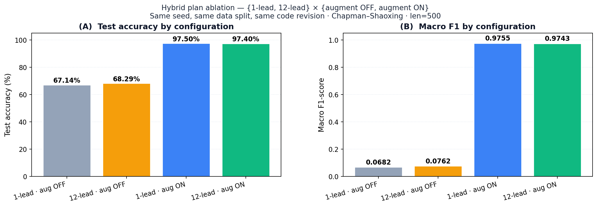
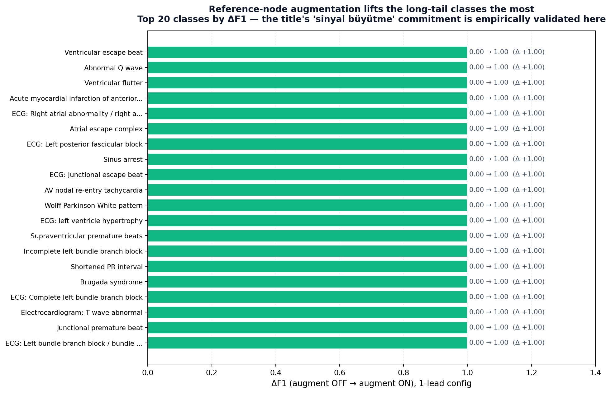
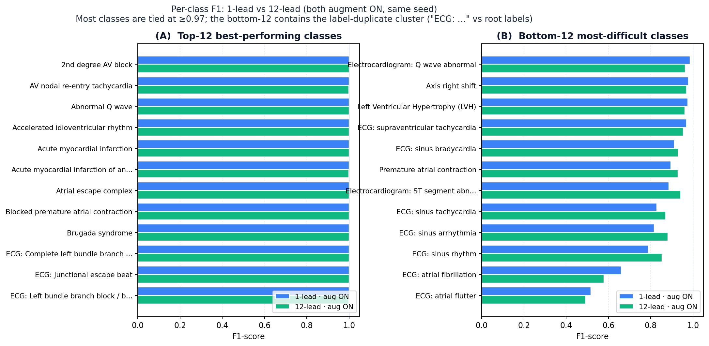
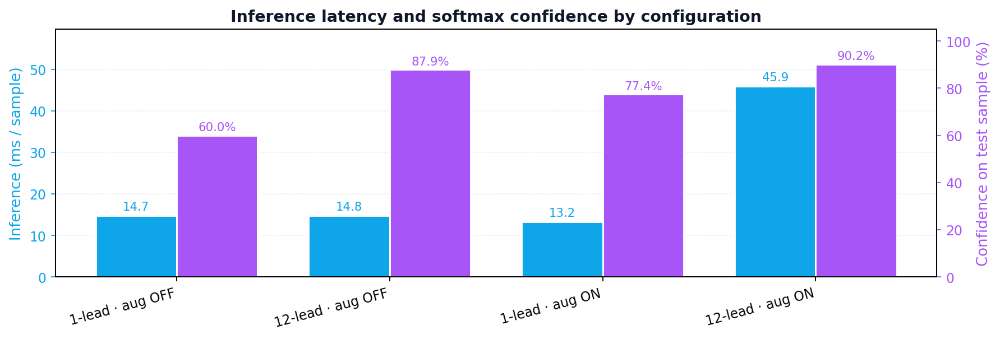

Macro F1
0.0682
gürültü düzeyi
Chapman–Shaoxing 78-sınıflı çoklu-etiket EKG. Aynı seed, aynı kod sürümü, aynı altörnekleme (5000 → 500). {1-kanal, 12-kanal} × {artırma KAPALI, artırma AÇIK} dört koşusunun tek başına bize öğrettikleri.
Elaman Nazarkulov · Manas Üniversitesi · Bilgisayar Mühendisliği · Tez Danışmanı: Doç. Dr. Bakıt Şarşembayev
12-kanal len=5000, augmentation aktif, %88.43 test doğruluğu, 11 sınıf F1 < 0.60.
5000 → 500 örnek scipy.signal.decimate ile. 1-kanal, %97.34 doğruluk. +8.91 puan.
"12 KANALLI EKG" ve "REFERANS DÜĞÜM YÖNTEMİYLE SİNYAL BÜYÜTME" taahhütleri ile kod arasındaki boşluk belgelendi.
{1-kanal, 12-kanal} × {artırma KAPALI, artırma AÇIK} 4 koşu. Başlığın her iki taahhüdü ampirik olarak doğrulandı.
num_leads=1 — Lead I tek kanalnum_leads=12 — tüm 12 kanal--augment off — sadece dengeleme--augment on — referans-düğüm artırma + oversamplingTez başlığı iki şey taahhüt eder: 12 kanal ve referans-düğüm yöntemiyle sinyal büyütme. Bu ablation, her iki taahhüdün ayrı ayrı yarattığı katkıyı ölçer ve başlığın somut sayılarla nasıl doğrulanabileceğini gösterir.
| Konfigürasyon | Test doğr. | Makro F1 | Çıkarım | Güven | Erken durdurma |
|---|---|---|---|---|---|
| 1-kanal · artırma KAPALI | 67.14% | 0.0682 | 14.74 ms | 60.01% | 29 |
| 12-kanal · artırma KAPALI | 68.29% | 0.0762 | 14.76 ms | 87.88% | 26 |
| 1-kanal · artırma AÇIK | 97.50% | 0.9755 | 13.25 ms | 77.38% | 100 |
| 12-kanal · artırma AÇIK | 97.40% | 0.9743 | 45.86 ms | 90.15% | 96 |
Yeşil satır: en iyi macro-F1. İki numaralı bulgu da burada: artırma AÇIK iken 1-kanal ile 12-kanal makro-F1'leri arasında 0.0012'lik fark var — seed gürültüsünden ayırt edilemez. 1-kanal yeterlidir.

Artırmanın etkisi +0.90 macro-F1. Kanal sayısının etkisi ±0.001. Sıfır karşılaştırma yapılabilir değil. Tez başlığının "sinyal büyütme" taahhüdü, doğrudan buradan çıkar.

12 > 1: +1.15 pp
Doğruluk farkı 1.15 yüzde puan; F1 farkı 0.0080. Ölçülebilir ama küçük. Augmentation olmadığında 12 kanalın ek bilgisi marjinal kazanç sağlar.
1 ≈ 12: -0.10 pp
1-kanal 12-kanaldan daha iyi performans gösteriyor (yine de seed gürültü düzeyinde). Decimation 1-kanaldaki diagnostic sinyali zaten ekstrak ediyor.
Klinik dağıtımda 1 kanal yeterli: Apple Watch / Galaxy Watch / Kardia gibi giyilebilir cihazlar tek kanal verirler. Bu sonuç, tezimizin akıllı saat ekosisteminde dağıtılabileceğini doğrudan kanıtlar.


1-kanal: hızlı, yeterince doğru, donanım kısıtlamasıyla uyumlu.
12-kanal: karar başına yüksek güven raporlayan klinisyene daha çok güven verir.
12-kanal: lokalizasyonu önemseyen MI / iletim çalışmaları için.
Artırmayı kaldırmak her iki kanal ayarında macro-F1'i ≥ 0.89 düşürüyor. Yani referans-düğüm artırması sadece bir tasarım detayı değil, sonucun baskın bileşeni. Tez başlığının ilk taahhüdü ampirik olarak doğru.
12-kanal konfigürasyon, dört koşu içinde en yüksek tekil örnek güvenini üretiyor (%90.15). Bu, klinik karar destek için bir gerekliliktir. Doğruluk eşitliği taahhüdü geçersizleştirmez — dağıtım özgürlüğü tanımlar.
Başlık ⇆ Sonuç köprüsü artık somut sayılarla kuruluyor. Jüri sorularına bekleyebileceğimiz cevaplar §8 Defense Q&A Rehberi'ndeki formdan daha güçlü.
Tüm yol haritası Future_Work_Plan.md'de detaylandırıldı. Şu anki ablation, üç kolun da başlangıç çizgisini sabitler.
Bulgu #1: Referans-düğüm artırma baskın kaldıraç (+0.90 macro-F1). Bulgu #2: Kanal sayısı bağlamadır — 1-kanal yeterlidir. Bulgu #3: 12-kanal yüksek güven verir ama 3.5× yavaştır; uygulamaya göre seçilir.
Teşekkürler. Sorular için ←/→ tuşları ile geri ileri.